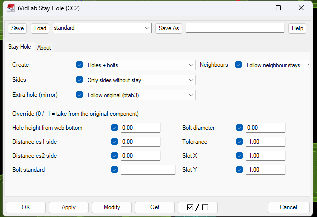

iVidLab Stay Hole (CC2) 1.11P — có gì mới
Bản 1.11P tạo lỗ stay theo xà gồ lân cận, không còn tạo thừa lỗ ở component đã có stay, và thêm lựa chọn All bolts.
Tóm tắt nhanh
- Theo xà gồ lân cận: chỉ tạo lỗ ở phía mà xà gồ kề bên có stay.
- Component đã có stay (một hay hai bên) thì Stay Hole không làm gì.
- Ô Neighbours: theo lân cận (mặc định) hoặc luôn tạo cả hai bên.
- Ô Create thêm All bolts: cả lỗ phụ cũng là bu-lông thật.

1. Theo xà gồ lân cận
Trước đây component không stay luôn nhận lỗ cả hai bên. Nay Stay Hole nhìn các xà gồ kề bên (cùng kèo, hàng xà gồ kề) và chỉ tạo lỗ ở phía mà lân cận có stay. Ví dụ hàng bên cạnh chỉ có stay bên trái thì xà gồ không stay chỉ nhận lỗ bên trái, không còn lỗ thừa bên phải.
- Không có lân cận nào có stay: tạo cả hai bên như trước.
- Ô Neighbours: "Follow neighbour stays" (mặc định) hoặc "Both sides if no stay" (luôn cả hai bên).
- Lân cận đổi thì bấm Modify Stay Hole để cập nhật.
2. Component đã có stay thì không làm gì
Component đã có stay (một hay hai bên, kể cả kiểu bản mã + stay) được giữ nguyên, Stay Hole không bù lỗ cho phía kia. Chỉ component không stay mới được tạo lỗ.
3. Lựa chọn Create
- Holes only: chỉ tạo lỗ.
- Holes + bolts: như component gốc: bu-lông ở vị trí stay, lỗ phụ chỉ là lỗ.
- All bolts: cả lỗ phụ cũng là bu-lông thật.
4. Cách nâng cấp
- Ở mục Tải về bên dưới, tải gói
iVidLab.StayHole_1.11P.tsep. - Nếu đã cài bản cũ, gỡ bản cũ trong Tekla Extension Manager trước.
- Nhấp đúp file
.tsep, tick phiên bản Tekla rồi bấm Import. Gói được cài khi Tekla khởi động lần tiếp theo.
iVidLab Stay Hole (CC2) 1.11P — what's new
Version 1.11P creates stay holes following neighbouring purlins, no longer adds extra holes to a component that already has a stay, and adds an All bolts option.
At a glance
- Follows neighbouring purlins: holes only on the side where the adjacent purlin has a stay.
- A component that already has a stay (one or both sides) is left alone.
- Neighbours box: follow neighbours (default) or always both sides.
- Create box gains All bolts: the extra holes become real bolts too.
1. Following neighbouring purlins
Before, a component without a stay always got holes on both sides. Now Stay Hole looks at the adjacent purlins (same rafter, adjacent row) and only creates holes on the side where a neighbour has a stay. For example, if the next row only has a left stay, the purlin without a stay only gets a left hole, with no extra hole on the right.
- No neighbour has a stay: both sides are created, as before.
- Neighbours box: "Follow neighbour stays" (default) or "Both sides if no stay" (always both sides).
- After a neighbour changes, click Modify on Stay Hole to update.
2. A component with a stay is left alone
A component that already has a stay (one or both sides, including the plate + stay types) is kept as it is, and Stay Hole does not add holes for the other side. Only components without a stay get holes.
3. The Create options
- Holes only: holes only.
- Holes + bolts: as the source component: bolts at the stay position, the extra holes are holes only.
- All bolts: the extra holes become real bolts too.
4. How to upgrade
- In the Download section below, get
iVidLab.StayHole_1.11P.tsep. - If an older version is installed, uninstall it in Tekla Extension Manager first.
- Double-click the
.tsepfile, tick your Tekla version and click Import. It is installed the next time Tekla starts.
Tải vềDownload

Nhóm Zalo người dùng iViDLabiViDLab user group on Zalo
Quét mã QR hoặc bấm nút bên cạnh để vào nhóm: hỏi đáp khi sử dụng, báo lỗi và nhận thông báo bản cập nhật mới.
Scan the QR code or use the button to join the group: usage questions, bug reports and new release announcements.
Liên hệ iViDLabContact iViDLab
Theo dõi fanpage Facebook hoặc gửi email để được hỗ trợ và góp ý.
Follow the Facebook page or send an email for support and feedback.